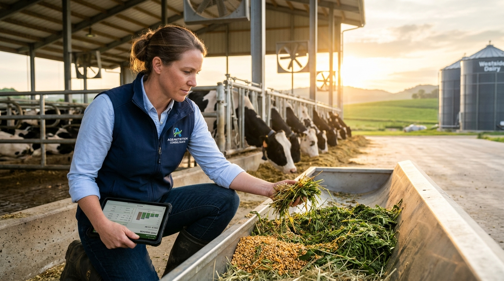
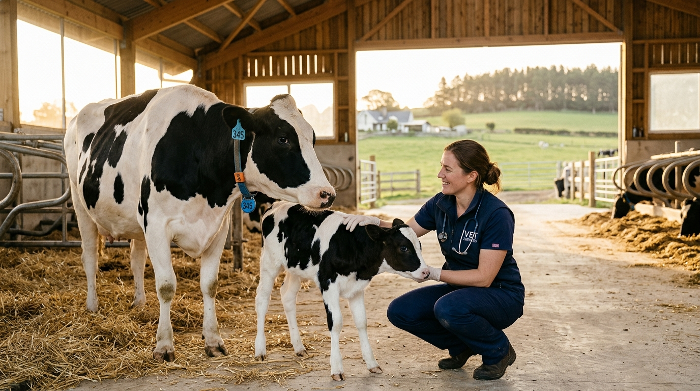

Professional Agricultural & Veterinary Services
Tailored operational and nutritional programs designed to lower feeding costs and optimize production.

CNCPS ModelingRation Formulation & Analysis
Complete CNCPS computer modeling to balance metabolizable amino acids, fermentable starch, and effective fiber for peak production efficiency.
 Pneumatic Freight
Pneumatic Freight
Bulk Silo Feed Logistics
Scheduled pneumatic tanker deliveries directly into your farm silos with zero pellet degradation, dust containment, and automated reorder alerts.
 Mobile NIR Lab
Mobile NIR Lab
On-Farm Silage & Forage Testing
Mobile NIR testing units providing immediate certified reports on Dry Matter, NDF digestibility (NDFD30), starch degradation, and mycotoxin load.
 Precision Blends
Precision Blends
Custom Mineral & Premix Blending
Tailored mineral and organic trace vitamin packs custom-blended to counteract your specific local soil, silage, and water mineral antagonists.

Clinical Vet CheckVeterinary Metabolic Herd Audits
Comprehensive fresh-cow metabolic monitoring: blood ketone diagnostics, rumen fill scoring, and manure fecal sieve digestion analysis by bovine specialists.
 Bunker Preservation
Bunker Preservation
Silage Bunker Compaction Audits
Core bunker density testing, infrared face thermography, and bacterial inoculant calibration to eliminate secondary aerobic fermentation shrink.